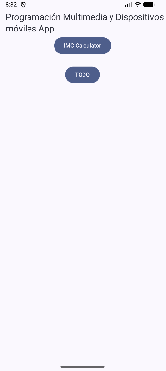
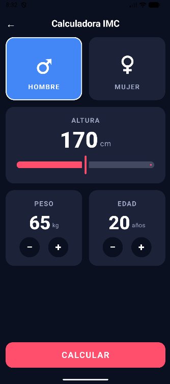
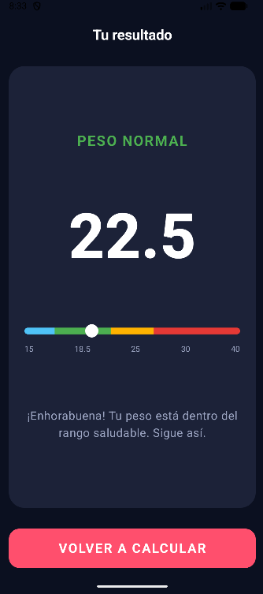

IMCApp
Calculadora del Índice de Masa Corporal con Jetpack Compose y Navigation 3
Sobre el proyecto
IMCApp es una calculadora del Índice de Masa Corporal para Android hecha con Kotlin y Jetpack Compose. Eliges el género, la altura, el peso y la edad, pulsas Calcular y la app muestra tu IMC con su categoría según los rangos de la OMS.
La hice en clase siguiendo los apuntes de PMDM de la UT3 (basados en el curso de Android y Compose de AristiDev): menú, navegación con Navigation 3, selectores de género y altura, contadores y pantalla de resultado. Para la tarea de mejorar el aspecto de las dos pantallas hice un diseño propio, distinto del de los apuntes: tema azul noche y rosa, color animado en el selector de género, límites en los contadores, datos que se conservan al girar el móvil y una barra de escala de colores en el resultado.
Documentación técnica en LaTeX
El proyecto incluye una documentación en LaTeX que separa lo que sale de los apuntes y lo que cambié yo, con el diagrama de clases, el diseño de cada pantalla, los requisitos y el código de cada archivo explicado función por función.
- Descripción general y cambios propios
- Diagrama de clases
- Diseño de las 3 pantallas
- 9 requisitos funcionales
- 6 requisitos no funcionales
- Código comentado (10 archivos)
Características principales
Selector de género
Dos tarjetas con color animado, borde y elevación en la seleccionada.
Altura, peso y edad
Slider de 120 a 220 cm y contadores con su unidad y límites de valores.
Resultado con escala
IMC con un decimal, categoría de la OMS en su color y barra de 15 a 40 con marcador.
Navigation 3
Rutas tipadas y el IMC pasado como argumento; los datos se conservan al volver.
Stack Tecnológico
Lenguaje & UI
- Kotlin
- Jetpack Compose
- Material 3
- animateColorAsState
Navegación & Estado
- Navigation 3
- kotlinx.serialization
- rememberSaveable
- State hoisting
Herramientas
- Android Studio
- Gradle
- GitHub y Releases (APK)
- LaTeX
- KDoc con Dokka
Galería


